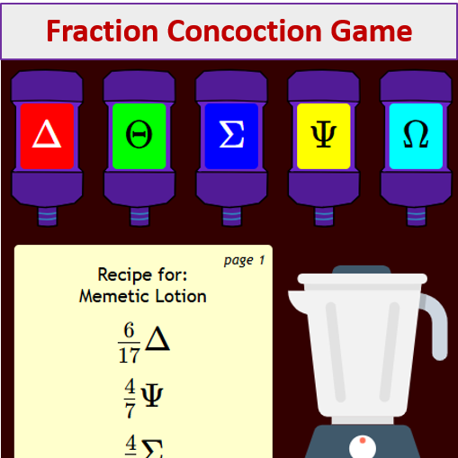
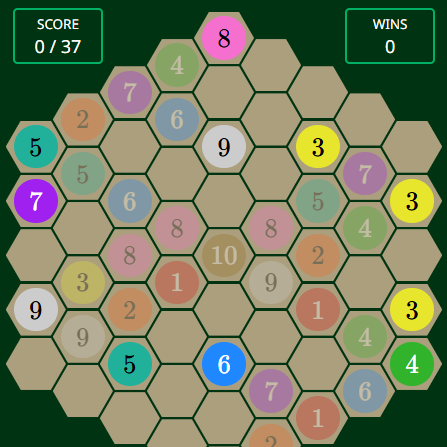
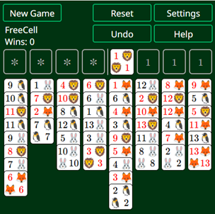
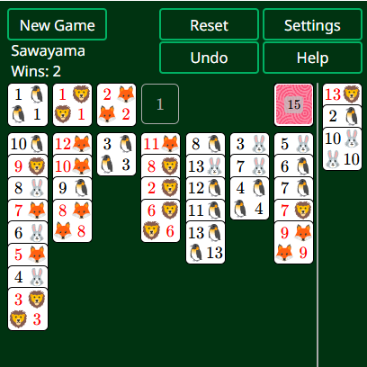
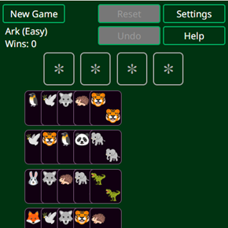
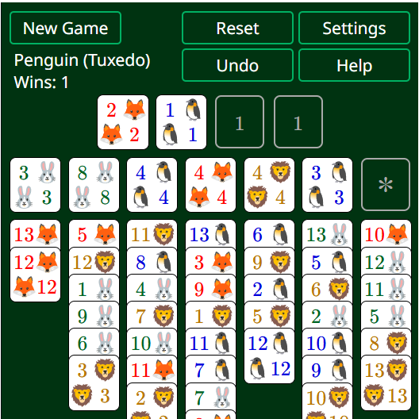
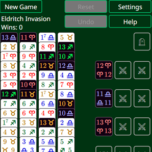
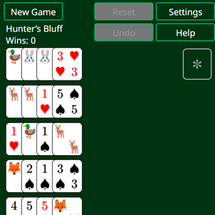
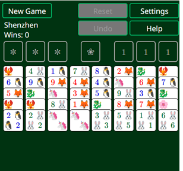
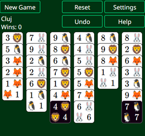

Mix wondrous concoctions by adding and subtracting fractions.

Match pairs of orbs that add up to 10. Inspired by Sigmar’s Garden by Zachtronics.

The venerable solitaire variant. Almost always winnable (>99.99%), with no hidden information or luck-of-the-draw.

A reimagined version of Klondike that is faster, more strategic, and more often winnable than the original. Rules by Zachtronics.

Save the animals by matching sets of four! A reskin of Kabufuda Solitaire by Zachtronics.

A skill-based, open-information solitaire invented by David Parlett. Also available as the “Tuxedo” variant with simpler rules.

Evil monsters have invaded your deck! Defeat them with the power of basic addition! Originally featured in “A Solitaire Mystery”.

An asymmetric solitaire variant featuring two types of cards. Help the animals to hide, and help the hunters to organize. A reskin of Proletariat’s Patience by Zachtronics.

A FreeCell variant featuring a unique deck inspired by traditional Mahjong tiles. Rules by Zachtronics.

A sneaky solitaire variant where you can “cheat” and place cards wherever you want, but be careful not to block yourself off! Rules by Zachtronics.